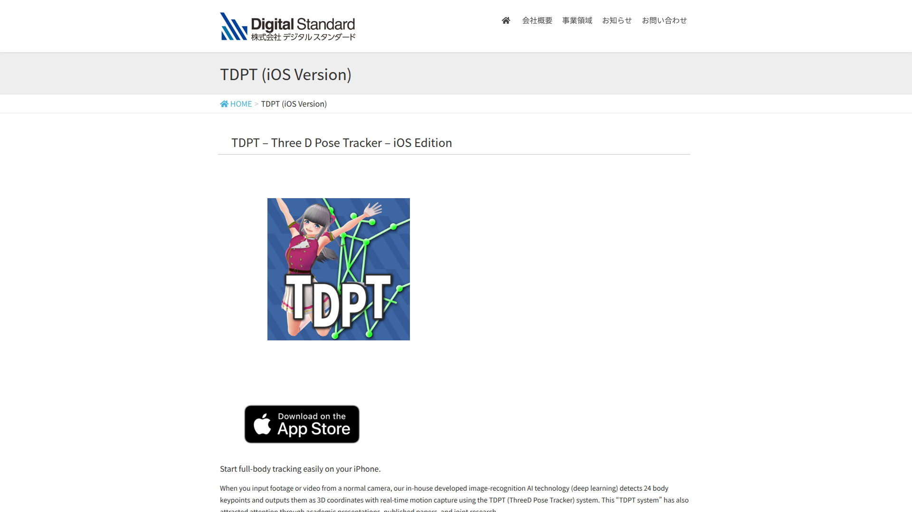

即時 3D 姿態追蹤工具——僅需一台普通攝影機，即可偵測 24 個身體關鍵點並輸出完整 3D 座標資料。由 Digital Standard 開發，專為即時動作預覽與串流設計。

傳統動捕需要昂貴設備和複雜設置。TDPT 用深度學習 AI 從普通攝影機即時追蹤 24 個身體關鍵點，輸出 3D 座標，透過 VMC Protocol 串流到 Blender/Unity。
⚠️ 傳統即時動捕
✅ TDPT 方案
TDPT 即時追蹤展示——單攝影機即時偵測 24 個身體關鍵點
使用單一 RGB 攝影機進行即時骨架偵測，以深度學習模型推斷 3D 空間座標。支援 VMC Protocol 將骨架資料即時串流至 Blender、Unity 等外部軟體。
本工具在 AI 動作量產工作流中的定位與搭配方式。
即時驅動虛擬角色，低延遲串流表演。
快速驗證動作概念，確認方向後再正式製作。
搭配展覽或互動裝置，即時人體姿態回饋。
TDPT 是優秀的即時預覽工具，適合在動作製作早期快速驗證方向。但由於關鍵點數量限制（24 點、無手指臉部）及缺乏直接 BVH 輸出，不適合作為正式動畫產出工具。在 AI 動作生成工具 Pipeline 中定位為「前期即時預覽」角色。